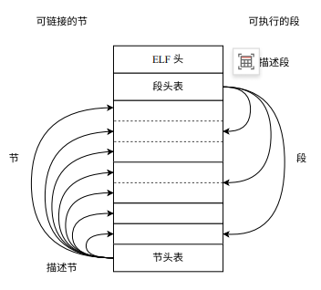
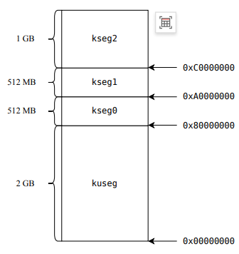
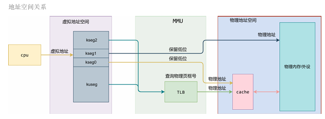

思考题
thinking 1.1 objdump
问题：分别使用x86工具链和MIPS交叉编译工具链，重复编译和解析过程，观察结果并解析objdump传入参数含义
回答：
编写hello.c文件
1
2
3
4
5
6
| #include <stdio.h
int main(){
puts("Hello World!");
return 0;
}
|
首先使用x86工具链
- 输入
gcc -g -c hello.c -o hello_x86.o只编译不链接
- 输入
objdump --section=.text --disassemble=main --source hello_x86.o进行反汇编
输出为
1
2
3
4
5
6
7
8
9
10
11
12
13
14
15
16
17
18
19
20
21
| hello_x86.o： 文件格式 elf64-x86-64
Disassembly of section .text:
0000000000000000 <main:
#include <stdio.h
int main(){
0: f3 0f 1e fa endbr64
4: 55 push %rbp
5: 48 89 e5 mov %rsp,%rbp
puts("Hello World!");
8: 48 8d 05 00 00 00 00 lea 0x0(%rip),%rax # f <main+0xf
f: 48 89 c7 mov %rax,%rdi
12: e8 00 00 00 00 call 17 <main+0x17
return 0;
17: b8 00 00 00 00 mov $0x0,%eax
}
1c: 5d pop %rbp
1d: c3 ret
|
可以看出call语句中e8后面内容为0
- 输入
gcc -g -static hello_x86.o -o hello_x86进行静态链接
- 输入
objdump --section=.text --disassemble=main --source hello_x86进行反汇编
输出为：
1
2
3
4
5
6
7
8
9
10
11
12
13
14
15
| hello_x86： 文件格式 elf64-x86-64
Disassembly of section .text:
00000000004018b5 <main>:
4018b5: f3 0f 1e fa endbr64
4018b9: 55 push %rbp
4018ba: 48 89 e5 mov %rsp,%rbp
4018bd: 48 8d 05 4c d7 07 00 lea 0x7d74c(%rip),%rax # 47f010 <__rseq_flags+0xc>
4018c4: 48 89 c7 mov %rax,%rdi
4018c7: e8 64 34 00 00 call 404d30 <_IO_puts>
4018cc: b8 00 00 00 00 mov $0x0,%eax
4018d1: 5d pop %rbp
4018d2: c3 ret
|
可以看到call中e8后面不为0
使用mips工具链
- 输入
mips-linux-gnu-gcc -g -c hello.c -o hello_mips.o只编译不链接
- 输入
mips-linux-gnu-objdump --section=.text --disassemble=main --source hello_mips.o进行反汇编
输出为：
1
2
3
4
5
6
7
8
9
10
11
12
13
14
15
16
17
18
19
20
21
22
23
24
25
26
27
28
29
30
31
32
| hello_mips.o： 文件格式 elf32-tradbigmips
Disassembly of section .text:
00000000 <main>:
#include <stdio.h>
int main(){
0: 27bdffe0 addiu sp,sp,-32
4: afbf001c sw ra,28(sp)
8: afbe0018 sw s8,24(sp)
c: 03a0f025 move s8,sp
10: 3c1c0000 lui gp,0x0
14: 279c0000 addiu gp,gp,0
18: afbc0010 sw gp,16(sp)
puts("Hello World!");
1c: 3c020000 lui v0,0x0
20: 24440000 addiu a0,v0,0
24: 8f820000 lw v0,0(gp)
28: 0040c825 move t9,v0
2c: 0320f809 jalr t9
30: 00000000 nop
34: 8fdc0010 lw gp,16(s8)
return 0;
38: 00001025 move v0,zero
}
3c: 03c0e825 move sp,s8
40: 8fbf001c lw ra,28(sp)
44: 8fbe0018 lw s8,24(sp)
48: 27bd0020 addiu sp,sp,32
4c: 03e00008 jr ra
50: 00000000 nop
|
可以看出立即数都为0，即还未分配地址。
1
2
| 1c: 3c020000 lui v0,0x0
20: 24440000 addiu a0,v0,0
|
- 输入
mips-linux-gnu-gcc -g -static hello_mips.o -o hello_mips进行静态链接
- 输入
mips-linux-gnu-objdump --section=.text --disassemble=main --source hello_mips进行反汇编
输出为
1
2
3
4
5
6
7
8
9
10
11
12
13
14
15
16
17
18
19
20
21
22
23
24
25
26
27
28
29
30
31
32
| hello_mips： 文件格式 elf32-tradbigmips
Disassembly of section .text:
00400790 <main>:
#include <stdio.h>
int main(){
400790: 27bdffe0 addiu sp,sp,-32
400794: afbf001c sw ra,28(sp)
400798: afbe0018 sw s8,24(sp)
40079c: 03a0f025 move s8,sp
4007a0: 3c1c004a lui gp,0x4a
4007a4: 279c8f80 addiu gp,gp,-28800
4007a8: afbc0010 sw gp,16(sp)
puts("Hello World!");
4007ac: 3c020046 lui v0,0x46
4007b0: 24443a00 addiu a0,v0,14848
4007b4: 8f828060 lw v0,-32672(gp)
4007b8: 0040c825 move t9,v0
4007bc: 041103c8 bal 4016e0 <_IO_puts>
4007c0: 00000000 nop
4007c4: 8fdc0010 lw gp,16(s8)
return 0;
4007c8: 00001025 move v0,zero
}
4007cc: 03c0e825 move sp,s8
4007d0: 8fbf001c lw ra,28(sp)
4007d4: 8fbe0018 lw s8,24(sp)
4007d8: 27bd0020 addiu sp,sp,32
4007dc: 03e00008 jr ra
4007e0: 00000000 nop
|
可以看出地址已经分配完毕
1
2
| 4007ac: 3c020046 lui v0,0x46
4007b0: 24443a00 addiu a0,v0,14848
|
objdump传入参数
--section=.text代表只处理代码段--disassemble=main代表只反汇编main函数--source表示把源代码和反编译代码混在一起输出，方便调试
thinking 1.2 readelf程序的问题
解析mos
问题：使用编写的readelf程序，解析之前target目录下生成的内核ELF文件
输入./tools/readelf/readelf ./target/mos解析内核ELF文件
输出
1
2
3
4
5
6
7
8
9
10
11
12
13
14
15
16
17
18
19
| 0:0x0
1:0x80020000
2:0x80021950
3:0x80021968
4:0x80021980
5:0x0
6:0x0
7:0x0
8:0x0
9:0x0
10:0x0
11:0x0
12:0x0
13:0x0
14:0x0
15:0x0
16:0x0
17:0x0
18:0x0
|
解析readelf
我们编写的readelf程序不能解析readelf文件本身，而系统工具可以，为什么？
使用系统工具readelf -h ./tools/readelf/readelf
输出
1
2
3
4
5
6
7
8
9
10
11
12
13
14
15
16
17
18
19
20
| ELF 头：
Magic： 7f 45 4c 46 02 01 01 00 00 00 00 00 00 00 00 00
类别: ELF64
数据: 2 补码，小端序 (little endian)
Version: 1 (current)
OS/ABI: UNIX - System V
ABI 版本: 0
类型: DYN (Position-Independent Executable file)
系统架构: Advanced Micro Devices X86-64
版本: 0x1
入口点地址： 0x1180
程序头起点： 64 (bytes into file)
Start of section headers: 14488 (bytes into file)
标志： 0x0
Size of this header: 64 (bytes)
Size of program headers: 56 (bytes)
Number of program headers: 13
Size of section headers: 64 (bytes)
Number of section headers: 31
Section header string table index: 30
|
tools/readelf目录下的Makefile内容为
1
2
3
4
5
6
7
8
9
10
11
12
13
14
| %.o: %.c
$(CC) -c $<
.PHONY: clean
readelf: main.o readelf.o
$(CC) $^ -o $@
hello: hello.c
$(CC) $^ -o $@ -m32 -static -g
clean:
rm -f *.o readelf hello
|
hello文件中写到了-m32，强制转换为32位，且为static静态。
thinking 1.3 内核入口地址的问题
问题：MIPS体系结构上电时，启动入口地址为0xBFC00000（或一个其他确定的地址）。但实验操作系统的内核入口没放在上电启动地址，而是按照内存布局图放置。
思考为什么依然能保证内核入口被正确跳转到。
（hint:实验启动过程的两阶段执行者？）
在内核编译阶段，通过 .ld 文件明确指定了 ENTRY(_start) 和基地址 0x80020000。确保了内核代码内部所有的函数调用和全局变量访问地址在编译时就已基于该运行地址计算正确。
启动分为两部分：
第一阶段是由Bootloader引导，其代码严格对齐在CPU的上电复位向量0xBFC00000。
CPU上电后，负责初始化最基本的硬件。
第二阶段是操作系统内核接管系统，管理进程和内存。
Bootloader完成搬运后，执行最后一条跳转指令，直接将程序计数器（PC）强制指向内核的入口地址。
难点分析
ELF文件

- 构成：ELF头、段头表（程序头表）、节头表、段头表中每个表项、节头表中每个表项
- 分类：重定位文件（.o）、可执行文件（.exe）、共享对象文件（.so）
- 节头表——组成可重定位文件，参与可执行文件和可共享文件的链接
- 段头表——组成可执行文件/可共享文件，在运行时为加载器提供信息
MIPS内存布局


如上图所示
- kuseg: 用户态下唯一可用的地址空间，通过MMU中的TLB进行地址转换，通过cache
- kseg0: 内核态下可用，经过MMU（地址最高位清0），经过cache
- kseg1: 内核态下可用，经过MMU（高三位清0），不经过cache
- kseg2: 内核态下可用，通过MMU中的TLB地址转换，通过cache
载入内核时不能用需要TLB转换的，而kseg1不经过cache，一般用于MMIO访问外设，所以内核放入kseg0中
Linker Script相关
记录各个节如何映射到段，以及各个段应被加载到的位置
重要的节 ：
- .text : 可执行文件中代码
- .data : 需要被初始化的全局变量 & 静态变量
- .bss : 未初始化的全局变 & 静态变量
其他知识点
- Cross Compile 交叉编译：目标代码运行的平台和编译器运行的平台不同（如本实验编译器在x86下运行，生成的MOS内核在MIPS平台运行）
- 变长参数等相关知识
实验体会
lab1和lab0区别比较大，lab0只是初识了命令行等基本知识，而lab1逐渐真正开始接触mos内核等核心程序。
虽然需要填写的内容并不多，但是需要仔细阅读的代码和需要了解的前置知识比较多，第一次接触时有点一头雾水。
第一次阅读完指导书，对需要干的事情并不清晰。总结出来的大致流程是：
- 粗略阅读指导书和仓库代码框架，大致理解本次实验的目的
- 看对应的课程视频，加深对本次知识的理解
- 在视频和指导书的共同辅助下先自己尝试填写一遍代码，再对照github中发布的答案仔细核对理解。
- 基本完成任务实现之后，再仔细回看指导书和视频。并详细阅读之前仓库中没仔细阅读的功能相关的代码
感觉这样才对本次实验的内容有点底，然而认知其实依然不深，希望可以在之后的lab中逐渐加深对操作系统实现的掌握程度。
上机中发现对回调函数依然理解不深，仿照print需要实现一个scanf，但是对与out类似的in的理解存在问题，导致extra没做出来，还是需要把代码细节搞清楚。
如果您喜欢此博客或发现它对您有用，则欢迎对此发表评论。 也欢迎您共享此博客，以便更多人可以参与。 如果博客中使用的图像侵犯了您的版权，请与作者联系以将其删除。 谢谢 ！